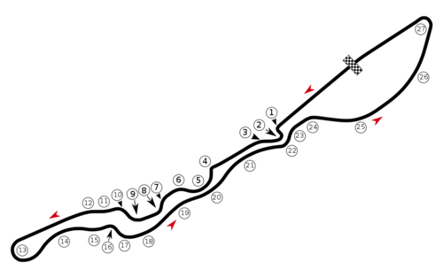
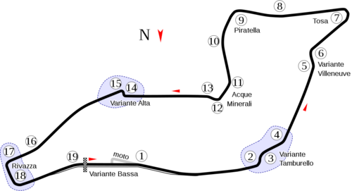
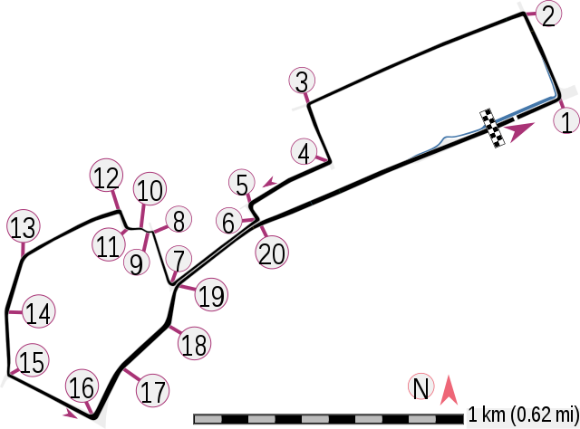

GP DE BAHREIN
Distancia total: 57 vueltas; 308,238 kilómetros
Mayor vencedor (constructores): Ferrari
Mayor vencedor (pilotos): Lewis Hamilton
N.º de ediciones: 18
Primera edición: 2004
Pista: Circuito Internacional de Baréin
Ubicacion: Sakhir, Bandera de Baréin Baréin
GP DE ARABIA SAUDITA
Distancia total: 50 vueltas; 308,75 kilómetros
Mayor vencedor (constructores): Mercedes (1); Red Bull (1)
Mayor vencedor (pilotos): Lewis Hamilton (1); Max Verstappen (1)
N.º de ediciones: 2
Primera edición: 2021
Pista: Circuito de la Corniche de Yeda
Ubicacion: Yeda, Arabia Saudita
GP DE AUSTRALIA
Distancia total: 58 vueltas; 307,574 kilómetros
Mayor vencedor (constructores): Ferrari (13)
Mayor vencedor (pilotos): Lex Davison (4); Michael Schumacher (4)
N.º de ediciones: 84
Primera edición: 1928
Pista: Circuito de Albert Park
Ubicacion: Melbourne, Australia
GP DE EMILIA-ROMAÑA
Distancia total: 63 vueltas; 307,458 kilómetros
Mayor vencedor (constructores): Red Bull (2)
Mayor vencedor (pilotos): Max Verstappen (2)
N.º de ediciones: 2
Primera edición: 2020
Pista: Autodromo Enzo e Dino Ferrari
Ubicacion: Imola, Emilia-Romaña Italia
GP DE MIAMI
Distancia total: 57 vueltas; 308,37 kilómetros
Mayor vencedor (constructores): Red Bull (1)
Mayor vencedor (pilotos): Max Verstappen (1)
N.º de ediciones: 1
Primera edición: 2022
Pista: Autódromo Internacional de Miami
Ubicacion: Miami Gardens , Florida , Estados Unidos
GP DE ESPAÑA

Distancia total: 66 vueltas; 308,55 kilómetros
Mayor vencedor (constructores): Ferrari (12)
Mayor vencedor (pilotos): Michael Schumacher (6), Lewis Hamilton (6)
N.º de ediciones: 51
Primera edición: 1923
Pista: Circuito de Barcelona-Cataluña
Ubicacion: Montmeló, España
GP DE MONACO
Distancia total: 78 vueltas; 260,286 kilómetros
Mayor vencedor (constructores): McLaren (15)
Mayor vencedor (pilotos): Ayrton Senna (6)
N.º de ediciones: 68
Primera edición: 1950
Pista: Circuito de Mónaco
Ubicacion: Montecarlo, Mónaco
GP DE AZERBAIYAN
Distancia total: 51 vueltas; 306,049 kilómetros
Mayor vencedor (constructores): Red Bull (3)
Mayor vencedor (pilotos): Daniel Ricciardo (1); Lewis Hamilton (1); Valtteri Bottas (1); Sergio Pérez (1); Max Verstappen (1)
N.º de ediciones: 5
Primera edición: 2017
Pista: Circuito callejero de Bakú
Ubicacion: Bakú, Azerbaiyán
GP DE CANADA
Distancia total: 70 vueltas; 305,27 kilómetros
Mayor vencedor (constructores): Ferrari (14)
Mayor vencedor (pilotos): Michael Schumacher (7), Lewis Hamilton (7)
N.º de ediciones: 57
Primera edición: 1961
Pista: Circuito Gilles Villeneuve
Ubicacion: Montreal, Canadá
GP DE GRAN BRETAÑA

Distancia total: 52 vueltas; 306,332 kilómetros
Mayor vencedor (constructores): Ferrari (17)
Mayor vencedor (pilotos): Lewis Hamilton (8)
N.º de ediciones: 75
Primera edición: 1926
Pista: Circuito de Silverstone
Ubicacion: Northamptonshire, Inglaterra, Unido Reino Unido
GP DE AUSTRIA

Distancia total: 71 vueltas; 307,02 kilómetros
Mayor vencedor (constructores): Ferrari (6), mcLaren (6)
Mayor vencedor (pilotos): Alain Prost (3); Max Verstappen (3)
N.º de ediciones: 35
Primera edición: 1964
Pista: Red Bull Ring
Ubicacion: Spielberg, Austria
GP DE FRANCIA

Distancia total: 53 vueltas; 309,626 kilómetros
Mayor vencedor (constructores): Ferrari (17)
Mayor vencedor (pilotos): Michael Schumacher (8))
N.º de ediciones: 62
Primera edición: 1950
Pista: Circuito Paul Ricard
Ubicacion: Le Castellet, Francia
GP DE HUNGRIA
Distancia total: 66 vueltas; 308.550 kms
Mayor vencedor (constructores): Ferrari (12)
Mayor vencedor (pilotos): Michael Schumacher (6), Lewis Hamilton (6)
N.º de ediciones: 51
Primera edición: 1923
Pista: Circuito de Barcelona-Cataluña
Ubicacion: Montmeló, España
GP DE BELGICA
Distancia total: 66 vueltas; 308.550 kms
Mayor vencedor (constructores): Ferrari (12)
Mayor vencedor (pilotos): Michael Schumacher (6), Lewis Hamilton (6)
N.º de ediciones: 51
Primera edición: 1923
Pista: Circuito de Barcelona-Cataluña
Ubicacion: Montmeló, España
GP DE PISES BAJOS

Distancia total: 66 vueltas; 308.550 kms
Mayor vencedor (constructores): Ferrari (12)
Mayor vencedor (pilotos): Michael Schumacher (6), Lewis Hamilton (6)
N.º de ediciones: 51
Primera edición: 1923
Pista: Circuito de Barcelona-Cataluña
Ubicacion: Montmeló, España
GP DE ITALIA
Distancia total: 66 vueltas; 308.550 kms
Mayor vencedor (constructores): Ferrari (12)
Mayor vencedor (pilotos): Michael Schumacher (6), Lewis Hamilton (6)
N.º de ediciones: 51
Primera edición: 1923
Pista: Circuito de Barcelona-Cataluña
Ubicacion: Montmeló, España
GP DE SINGAPUR
Distancia total: 66 vueltas; 308.550 kms
Mayor vencedor (constructores): Ferrari (12)
Mayor vencedor (pilotos): Michael Schumacher (6), Lewis Hamilton (6)
N.º de ediciones: 51
Primera edición: 1923
Pista: Circuito de Barcelona-Cataluña
Ubicacion: Montmeló, España
GP DE JAPON
Distancia total: 66 vueltas; 308.550 kms
Mayor vencedor (constructores): Ferrari (12)
Mayor vencedor (pilotos): Michael Schumacher (6), Lewis Hamilton (6)
N.º de ediciones: 51
Primera edición: 1923
Pista: Circuito de Barcelona-Cataluña
Ubicacion: Montmeló, España
GP DE ESTADOS UNIDOS

Distancia total: 66 vueltas; 308.550 kms
Mayor vencedor (constructores): Ferrari (12)
Mayor vencedor (pilotos): Michael Schumacher (6), Lewis Hamilton (6)
N.º de ediciones: 51
Primera edición: 1923
Pista: Circuito de Barcelona-Cataluña
Ubicacion: Montmeló, España
GP DE MEXICO
Distancia total: 66 vueltas; 308.550 kms
Mayor vencedor (constructores): Ferrari (12)
Mayor vencedor (pilotos): Michael Schumacher (6), Lewis Hamilton (6)
N.º de ediciones: 51
Primera edición: 1923
Pista: Circuito de Barcelona-Cataluña
Ubicacion: Montmeló, España
GP DE BRASIL
Distancia total: 66 vueltas; 308.550 kms
Mayor vencedor (constructores): Ferrari (12)
Mayor vencedor (pilotos): Michael Schumacher (6), Lewis Hamilton (6)
N.º de ediciones: 51
Primera edición: 1923
Pista: Circuito de Barcelona-Cataluña
Ubicacion: Montmeló, España
GP DE ABU DABI

Distancia total: 66 vueltas; 308.550 kms
Mayor vencedor (constructores): Ferrari (12)
Mayor vencedor (pilotos): Michael Schumacher (6), Lewis Hamilton (6)
N.º de ediciones: 51
Primera edición: 1923
Pista: Circuito de Barcelona-Cataluña
Ubicacion: Montmeló, España